SoyBase
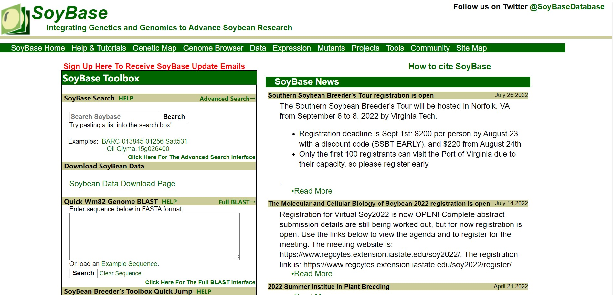
Introduce: SoyBase, the USDA-ARS soybean genetics and genomics database, is a comprehensive repository for professionally curated genetics, genomics and related data resources for soybean.
Link: https://soybase.org/
Soykb
Introduce: A comprehensive web resource developed for bridging soybean translational genomics and molecular breeding research.
Link: https://soykb.org/
Legoo
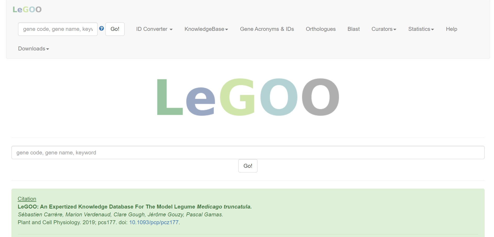
Introduce: LeGOO integrates genetics and reverse genetics approaches, massive amounts of data. Furthermore LeGOO collects and represents biological information from peer-reviewed publications..
Soynet
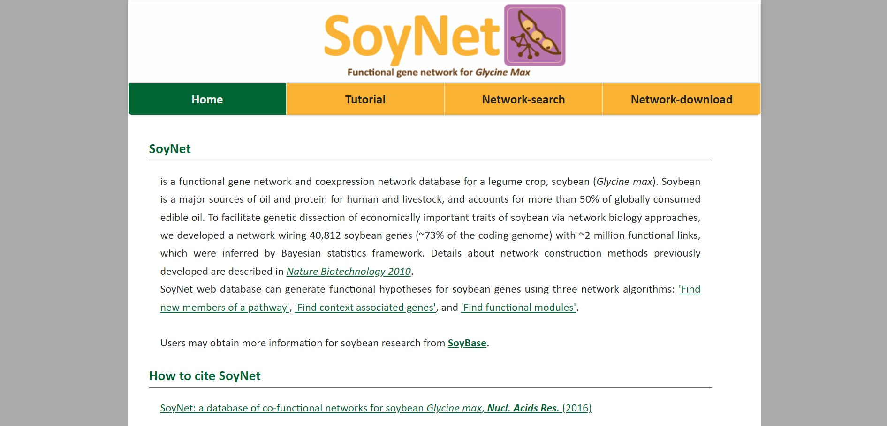
Introduce: a functional gene network and coexpression network database for a legume crop, soybean.
Link: http://www.inetbio.org/soynet/
NCGR
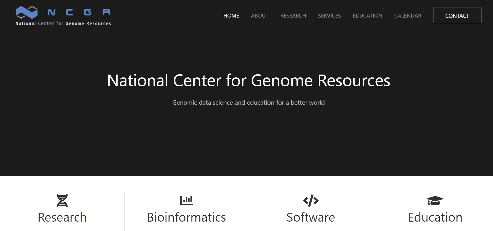
Introduce: The Medicago Genome Initiative (MGI) is a database of EST sequences of the model legume MEDICAGO: truncatula.
Link: https://www.ncgr.org/
CicArVarDB
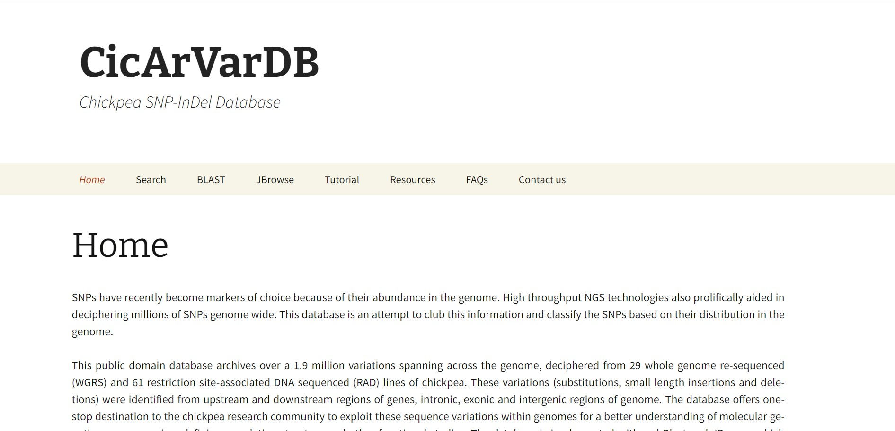
Introduce: SNP and InDel database for advancing genetics research and breeding applications in chickpea
MTED
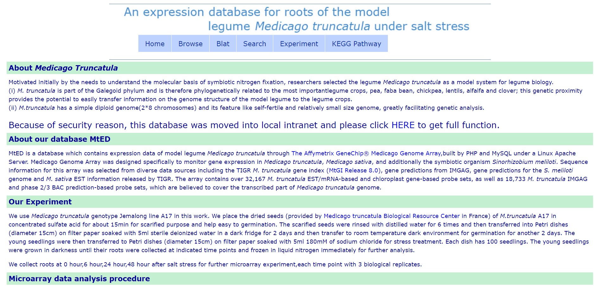
Introduce: MtED is a database which contains expression data of model legume Medicago truncatula through The Affymetrix GeneChip® Medicago Genome Array.
Link: http://bioinformatics.cau.edu.cn/MtED/
VIGCS
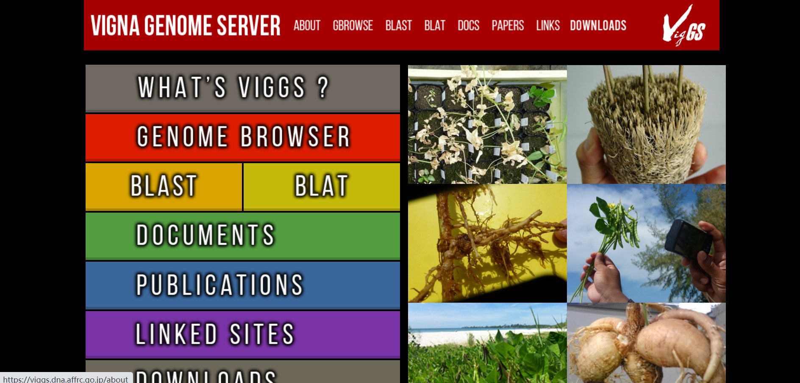
Introduce: We present the first genome database for genus Vigna, the Vigna Genome Server, which is based on a high quality, annotated azuki bean reference genome sequence.
MTTD
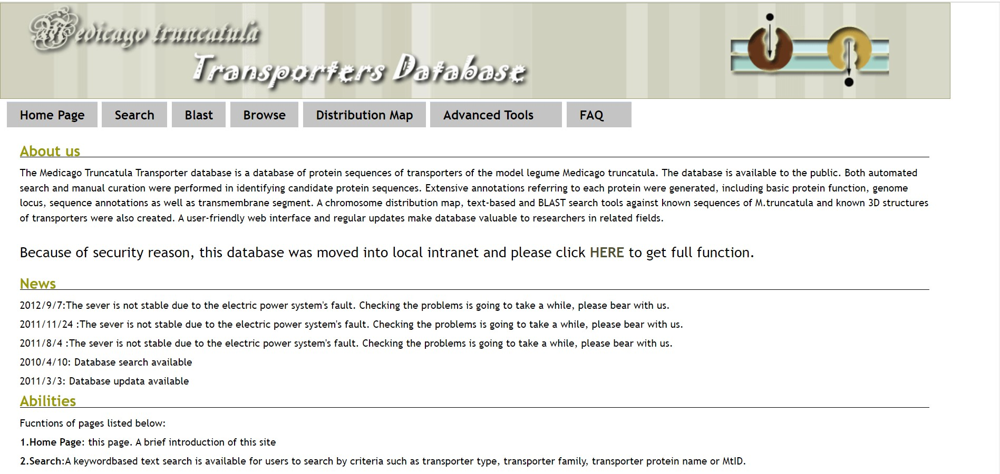
Introduce: The Medicago Truncatula Transporter database is a database of protein sequences of transporters of the model legume Medicago truncatula.
CicArMiSatDB
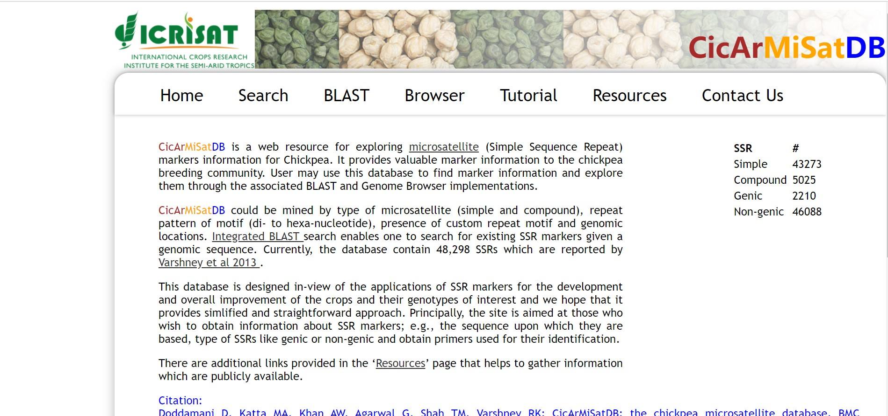
Introduce: CicArMiSatDB is a web resource for exploring microsatellite (Simple Sequence Repeat) markers information for Chickpea. It provides valuable marker information to the chickpea breeding community.
SFGD
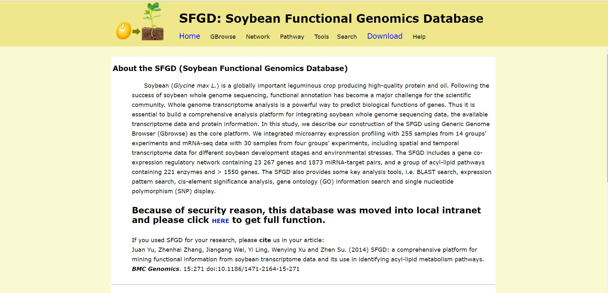
Introduce: The SFGD is a comprehensive database integrating genome and transcriptome data, and also for soybean acyl-lipid metabolism pathways.
Link: http://bioinformatics.cau.edu.cn/SFGD/
Soybean VCF2Genomes
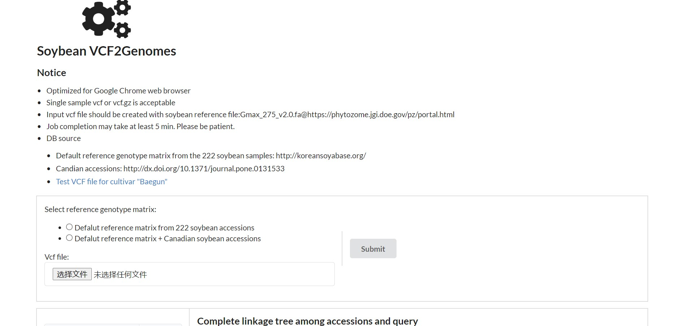
Introduce: Soybean-VCF2Genomes is a database for identification the closest accession in soybean germplasm
collection.
Link: http://pgl.gnu.ac.kr/soy_vcf2genome/
TGIF-DB
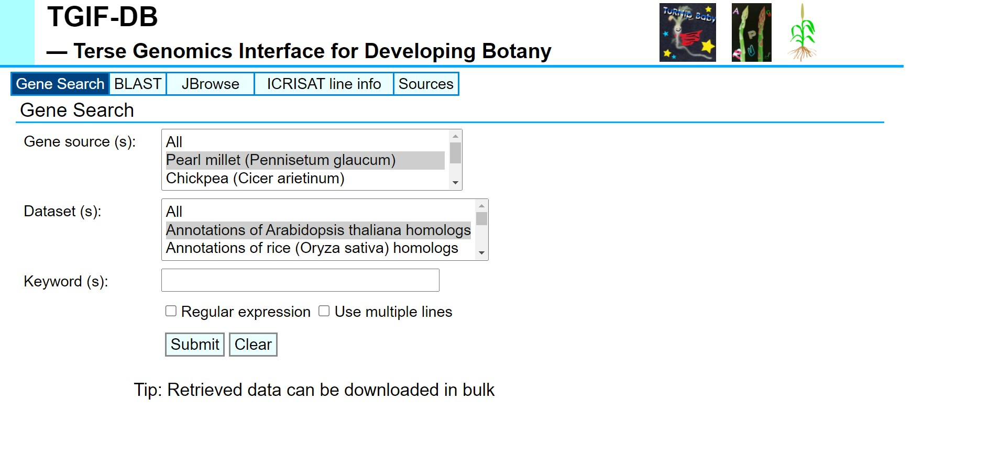
Introduce: The resulting data for the gene sequences and their functional annotations for pearl millet, garden asparagus, chickpea and Tartary buckwheat were deposited in the figshare repository.